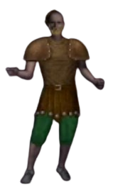

8x8 dot gg site -- Irish gamer
Trying to stream on twitch "https://www.twitch.tv/aindriuoc"
UO Outlands
Starting out
Thursday 26th of March 2026

Just starting out in UO Outlands. I decided to start streaming. I am still customising the configurations. In a way, I would like to store all my videos, as I go, but streaming everything and storing it might take up too much space. I got online streaming anyway. My character Rudratha, I decided to make as a dungeon scavenger, as I read, that you can get good starting money. To be honest, I have no idea what to do with my character. I played this game before, and remember it a long time ago, when I was a kid, when the internet first came out. I used to play on the online emulators, particular UOX3 and Sphere, and then RunUO came out which was great. Mostly, I am just getting a feel for the game again. I leveled up camping to level 80. It seems you can get high level skills to 80, in the newbie dungeon on Shelter Island, by just using the same skill over and over (macroing), or leveling up there. I did get camping to 80 eventually. Mostly, the game does not give one very much starting money at the beginning. I used my credits (which is a yellow scrolls), to train "Begging" skill. Mostly, the skills are a little overrated, and some not used, but Begging, seems to be one of the things, people do not realise in the videos I watched. You can pop 50 on begging, and get like 100/200 gold easily by just going around begging of the NPCs. It just gives a bit of leg room, if you pick a build (like I did), where you have to kill mongbats for money. I realised maybe the Begging skill was probably not such a good idea, but it allowed me to buy and chopping axe and a carpentry tool, at the Carpenter's and get the kindling for levelling camping, which doesn't take much, but a few hundred in the bank, helps get back to dungeons when one dies, and want's to get back quick. Also, it seems the magery skill ball has limited charges, and it seems you might need a spell or two, to power level it effectively while just macroing. I managed to get the Invisibility spell and most the level 5 and 6 scrolls (I think that was the level), in the dungeon called ShadowSpire Catheral. If you have invisibility and stealth (at level 80), which I did, it is easy to just pop in, look for unlooted corpses, and then sell up. My goal is to loot absolutely everything, and create a stash of abandoned loot, as I go, to see how far I get. Often people, turn their noses up, at the filth, on the corpses, but one can use everything in the game, starting out. Initially, I wanted to perhaps, level Alchemy really fast, as it seems like a really good skill. So, I might just storehouse, all the herbs, I collect while scavenging, and then try get Alchemy up as soon as possible. I also leveled Magery to 80, and picked up an Arcane newbie staff (which someone dropped), which I might try passive leveling off the mobs, to get some points as I watch people mow through the dungeon critters. Mostly, my goal is fun, but some soft goals to start out with. Alchemy, is now my first goal. Starting the second session soon.
Starting out - Day One
Thursday 26th of March 2026
I managed to portal to the Outpost village, using the portal, and abandoned Shelter Island. I bought a level 1 horse, off the merchant there, which was just as much from player caught horses, leveled so the horse can be ressurected. I guess buying a first mount, is the cornerstone of Ultima Online, made easier by the "Creature Bazaar" which can be found on the Wiki. https://wiki.uooutlands.com/Creatures_Bazaar There is quite a lot of information on the Wiki. Mostly, over saturated at the beginning, trying to get a feel for what is needed, or what I would like to do. Getting killed over and over by high level mobs can be a bit frustrating. Perhaps, the easy approach, is the level a bit with a build or somesuch to kill monsters. I am still reflecting on it and decided to take a break. Originally, I was thinking alchemy, might be a good idea, to level first. After scavenging, for tid-bits, on the floor of ShadowSpire Cathedral, I realised that picking up the remains of herbs, was fruitful, but, too many things were on my mind. Firstly, I died frequently, trying to decide when I should portal back to the bank to put together my pieces I collected, and if I got some gold coin left over, that was positive. I decided to create a script off the UO Outlands Script site, to gather essences, from identified items. I previously had a script also, to use my scrolls, randomly to help kill monsters, but watched my magery counter, and it seemed it only levels the Arcane Spell. Mostly, I am half way around thinking, should I collect the tid-bits left over by players farming or build my own build? I then looked at another thing, that was on my mind, and that was lockpicking. I might try that as I scavenge too, picking up some of those dungeon chests, which seem to be closed. Anyway, logging out for a while!
Starting out - Day Two
Friday 27th of March 2026
Feeling slightly overwhelmed, with all the options in the game, but I managed to find the Thief Guild in Outpost. I am adding lockpicking and detect hidden (remove traps), to my arsenal for dungeon scavenging. I trained them both to 100, overnight, using a lockpicking chest, you can buy off the thief guild master, in Outpost, in the dungeon downstairs, north of the town. Mostly, I decided, that I should focus on a couple of things to level. Also, I am grabbing a sewing kit, and a recycle script, and have the identify item skill, so I can gather Arcane Essences, which are useful leveling up, when I start out later, I heard.